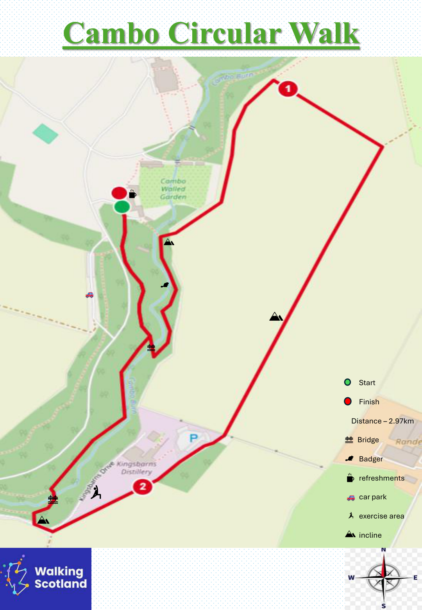
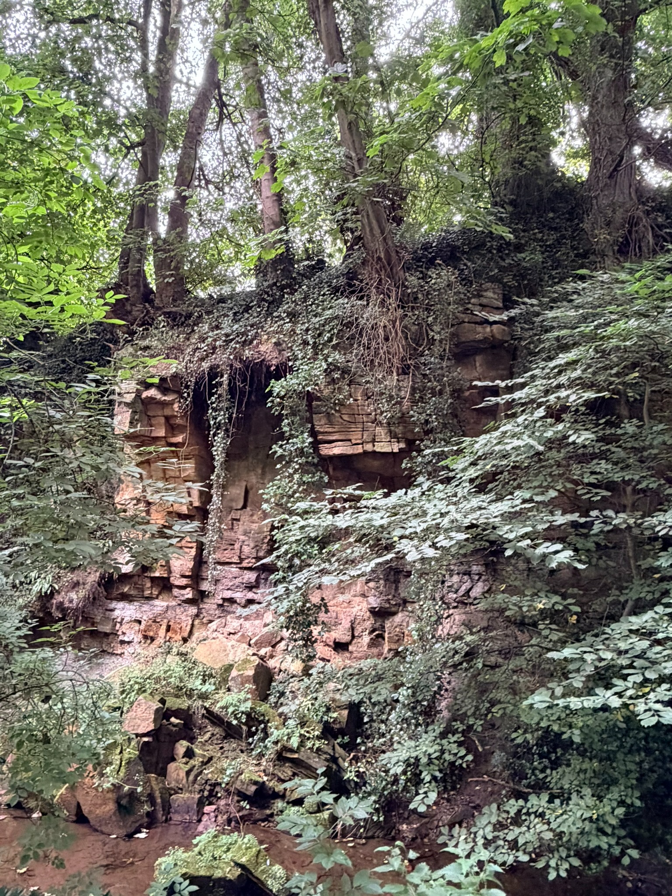
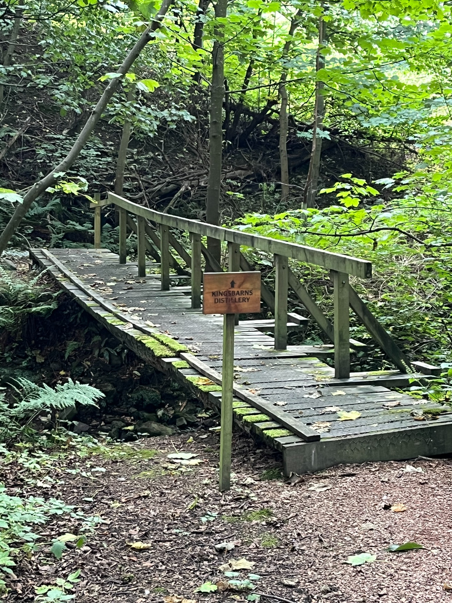
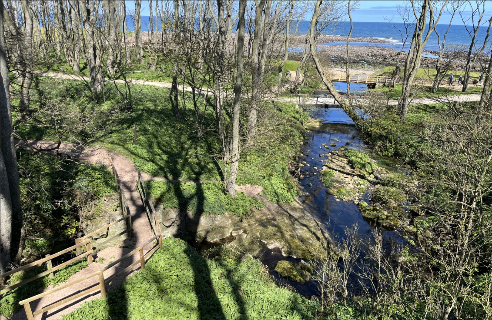

Fairy door
The route passes the Fairy Door near the Stables Visitor Centre.
Cambo Health Walks
A circular woodland walk through Cambo Den and the surrounding estate.
Find your way

This circular route begins at the Stables Visitor Centre and descends through woodland to the Cambo Burn. It follows the burn through Cambo Den, then climbs towards the edge of the woodland and crosses the fields towards Kingsbarns Distillery. The return route descends back into the woodland, crosses the burn and rejoins the original path to the Stables.
The route includes woodland paths, bridges, inclines and open-field sections. The booklet notes that some bridges have a handrail on only one side.
Read the full route descriptionThe walk
This walk takes you from the Stables Visitor Centre heading south past the ‘Fairy Door’ and down a sloping, woodland path towards the entrance to the Cambo Burn.
On the way, look out for the ‘badger run’, used at night-time, that crosses the main path. On reaching the burn, cross the first bridge* and turn left to head back in the direction of the Stables. Take note of the interesting rock formations and tree root systems on this section of the Cambo Den.
As you walk along, now with the burn on your left, keep a lookout for the badger sett on the opposite bank of the burn.
Just before the next bridge, we take a sharp right up a fairly steep incline and through a gate, that brings us to the edge of the woodland.
Follow the path along the side of the field, past the compost bins and, keeping the woodlands on our left, continue along the path, past the ‘Off-Grid’ holiday accommodation, until we reach a bank of solar panels stretching across the field.
Turn right at this point and, with the solar panels on your left, go along until you reach a track, used by farm vehicles, whereupon you turn left and follow the track up a gradual incline to the Kingsbarns Distillery.
Walk past the front of the Distillery and along the entrance road, keeping an eye on the edge of the woodland for an opening, beside which there is the following sign…
Go through this opening, taking care as the path has a downward slope and a sharp bend to the left. Further down the path you cross a bridge* and turn right along a path keeping the burn on your right.
Keep an eye out for the sleeping bear!
You will join the original path, go past the ‘badger run’ and ‘Fairy Door’ then through an opening taking you to the Stables Visitor Centre.
*Note: some of the bridges only have handrails on the one side!
Look out for
Select a photograph to enlarge it. Captions use the supplied photograph names; gallery descriptions can be added later.
The route passes the Fairy Door near the Stables Visitor Centre.

The route description asks walkers to look out for the badger sett on the opposite bank of the burn.
The route passes the compost bins on the edge of the woodland.


Take care
Some of the bridges only have handrails on one side. Take care on the steep incline and on the downward sloping path with a sharp bend.
Underfoot
The gravel paths are clear and wide enough for a wheeled walking aid. There are some inclines, both down and up, where extra care is necessary, particularly on the downward inclines. When crossing the field with the solar panels, care should be taken as, depending on recent weather, the soil conditions may not be suitable for wheeled walking.
Plan ahead
In autumn, the paths have a good covering of leaves that can be slippery when wet.
In winter, the path may be slippery in places during frosty weather but should remain mostly passable.

Cambo Health Walks
These walks have been developed by the Monday Walking Group which meets at the Cambo Stables each Monday morning at 9.30am, weather permitting.
The group walks are in association with Walking Scotland, a National Walking and Wheeling charity, whose purpose is to encourage walking by providing a framework for organised walking groups.
Walking Scotland use both terms walking and wheeling as it’s more inclusive. Both words represent the action of moving at a pedestrian’s pace, whether or not someone is unaided or using some kind of wheeled mobility aid.
The Walk Leaders have received appropriate training to ensure the walks are suitable and risk assessed for all attending, including those who use wheeled devices.
The walks are short, safe and social at a pace that we are able to talk. They last approximately 1 to 1¼ hours and between 1 and 5km in length. Depending on weather conditions, the paths may be slippery in places.
Cambo Gardens are managed by the Cambo Heritage Trust with its’ simple aim for Cambo to be a place ‘where people and plants grow’.

Shared information
Walking Scotland use both terms walking and wheeling as it’s more inclusive. Both words represent the action of moving at a pedestrian’s pace, whether or not someone is unaided or using some kind of wheeled mobility aid.
Shared information
Walking Scotland use both terms walking and wheeling as it’s more inclusive. Both words represent the action of moving at a pedestrian’s pace, whether or not someone is unaided or using some kind of wheeled mobility aid.
Shared information
The six illustrated exercises below are reproduced from the Cambo Estate Walk booklet.

Shared information
The Cambo Estate has been in the Erskine family for 300 years and in 1976 Lady Catherine Erskine and her husband Sir Peter took over the estate and began offering volunteering and training opportunities to the local community and opened to the public in the 1980s at snowdrop time when the grounds around the house are carpeted white.
Developing the walled garden was a logical next step in making a garden of interest to visitors all through the year. The head gardener introduced bold planting inspired by the New Perennial Movement* using grasses and late season perennials that didn’t need staking or deadheading, achieving high output for low input. In late summer and autumn these plantings reach a peak of beauty and interest as the grasses flower amongst herbaceous perennials including persicaria, asters, eupatorium and sedums.
The garden has entered a new chapter which may include training opportunities, an event space, and a contemporary cutting garden.
*Note: a naturalistic landscape and horticultural design style that mimics wild plant communities like prairies, meadows, and steppes.